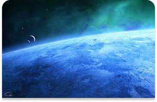

Batman
Bruce Wayne es el único personaje que se identifica como Batman y aparece en Batman, Detective Comics, Batman y Robin, y Batman: The Dark Knight. Dick Grayson vuelve al manto de Nightwing.
Bruce Wayne es el único personaje que se identifica como Batman y aparece en Batman, Detective Comics, Batman y Robin, y Batman: The Dark Knight. Dick Grayson vuelve al manto de Nightwing. Harley es la única persona que fue a trabajar a un manicomio y pensó: "Ese payaso asesino que no para de reír parece un excelente partido". Pasó de analizar mentes criminales a golpear gente con un mazo gigante.  Es básicamente un inmigrante ilegal de un planeta que explotó, quien decidió que la mejor forma de pasar desapercibido en la Tierra era ponerse los calzoncillos por encima de los pantalones y trabajar en un periódico moribundo.

Batman


Harley Quinn
Superman